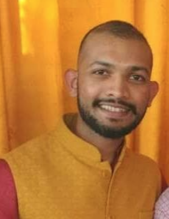

Rahul Gupta

My research focuses on Responsible AI for large language models, spanning evaluation benchmarks (see BOLD and Tango datasets), bias analysis (see our work on fairness evaluation metrics), and mitigations (see attribute-controlled fine-tuning for LLMs). I lead the TrustNLP workshop series at ACL, and have previously organized the Trustworthy Speech Processing workshop at ICASSP and the Unlearning Challenge at SemEval. As a graduate student, our team won the Interspeech Paralinguistics Challenge twice (2013 and 2015).
My latest publications can be accessed through my Google Scholar Profile and I often post latest research updates on X and LinkedIn.